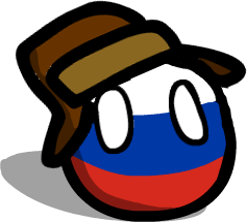

OPENRUSSIAN / ПРОБНАЯ СТАНЦИЯ
Личный языковой архив
Он оказался моим самым трудным языком: новый алфавит, падежи, ударение, вид глагола. Но именно поэтому каждый настоящий разговор до сих пор ощущается как маленькая победа.
Смотреть первую встречу↓ГЛАВА 01 / МОИ ВИДЕО
Эта встреча с Аней из Беларуси случилась неожиданно: я готовился говорить по-французски, услышал знакомый акцент и переключился на русский.
Я готовился к французскому, но одна случайная встреча стала моим самым памятным разговором по-русски.
ГЛАВА 02 / МОЙ ПУТЬ
Я не нашёл одного волшебного приложения. Русский складывался слоями: сначала опора, потом сотни часов знакомого контента, затем люди.
ОПОРА
Duolingo был коротким входом, а Anki помог удержать слова и формы.
ПОГРУЖЕНИЕ
После базы я перешёл на русские субтитры, фильмы и знакомые сюжеты. Контекст постепенно сделал падежи и глаголы менее абстрактными.
ГОЛОС
Разговоры с Мариной, Матвеем, Коулом и случайными собеседниками показали главное: язык может «остыть», но возвращается после разминки.
Русский научил меня не путать понимание с готовностью говорить.
Бывают периоды, когда активные слова уходят, особенно если я долго не разговариваю. Но понимание остаётся. Мне обычно нужна короткая разминка — и язык снова начинает двигаться.
Поначалу меня пугало, что одно слово меняется почти в каждом предложении. Потом я перестал ждать полного контроля и начал замечать формы внутри реальных сцен: в кино, разговорах и спортивных комментариях.
Неожиданно русский ещё сильнее связал меня со спортом. Я следил за гимнастикой, фигурным катанием, Камилой Валиевой, Алиной Загитовой и Анной Щербаковой — темами, которые раньше вообще не ожидал открыть для себя.
ГЛАВА 03 / СЛОВАРЬ И ГРАММАТИКА
OpenRussian соединяет словарь, уровни A1–C2, грамматику и практику. Здесь можно набрать слово кириллицей и открыть его точную словарную статью.

OPENRUSSIAN / ПРОБНАЯ СТАНЦИЯ
ГЛАВА 04 / ЕЖЕДНЕВНАЯ ПРАКТИКА
Около двух часов в день, больше трёх лет — просто потому, что я и так хотел смотреть NBA.
СПОРТИВНЫЙ РУССКИЙ
Когда я научился читать кириллицу, русскоязычный интернет резко стал больше: дубляж, фильмы, документальные материалы и спортивные эфиры. Поиск «смотреть фильм» превратился для меня в дополнительную практику чтения.
Главным ежедневным тренажёром стала NBA. В начале я переводил почти каждую строку. Теперь чтение и перевод в реальном времени чаще происходят без усилия.
Подсказка: если речь пока слишком быстрая, включите Live Caption в браузере — так знакомые слова легче удержать на слух.
ПОЛЕВЫЕ ЗАПИСИ
01 / 03МОИ GO-TO ИСТОЧНИКИ
ГЛАВА 05 / КНИГИ
Сейчас здесь пять книг с разной длиной и сложностью. Полка открыта для новых жанров и современных авторов, когда я добавлю их позже.
КНИЖНАЯ ПОЛКА / B1–C2
Загружаю книжную полку…
ГЛАВА 06 / РУССКОЯЗЫЧНЫЕ АВТОРЫ
Язык, современный разговор, спорт и повседневность живут на отдельных полках. Russian with Max и Russian Progress открывают языковую полку — дальше можно выбирать тему и темп.
Загружаю полки…
ГЛАВА 05 / КИНОЗАЛ
Когда я искал «смотреть фильм онлайн бесплатно», это было больше, чем кино: я учился читать описания, привыкал к быстрой речи и запоминал интонации в живом контексте.
КАТАЛОГ КИНО / A1–C1
Прямой просмотр и тренировка живого языкаПОСЛЕДНЯЯ ЗАПИСЬ / ПОКА
Он может остыть между разговорами. Он может быть намного сильнее в баскетболе, чем в больнице. Но он уже изменил то, что я смотрю, кого понимаю и какие истории замечаю.
Продолжить историю на моём канале
ЗАМЕТКА АЛДЖОНА
ПОСЛУШАТЬ В КОНТЕКСТЕ